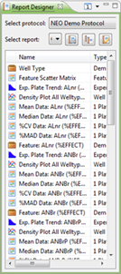
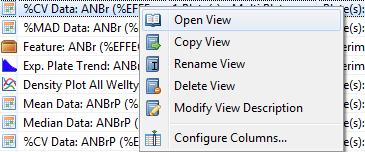

In the Report Designer, you can tune the views that will be included in your report.
You can change the order of the views, add descriptions to each view, and change many other settings.

By right clicking a view in the Report Designer, you can open the action menu for the selected View:

- Open View: Open the view in the way it will be shown in the report. You can edit the view like a regular view.
- Copy View: Duplicate a view with different properties.
- Rename View: Rename the view for the report.
- Delete View: Don't show the view in the report.
- Modify View Description: Add or modify a description that will be shown under the selected view in the report.
- Configure columns: Select or deselect the columns that you want to see in the Report Designer